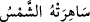

Dördüncü açıklama tarzı ise şudur: “Sâhira” kelimesindeki sad harfi sîne dönmüştür.
Kelimenin aslı; “/güneş onu yaktı” tâbirinden türemedir. Şu halde Cehennem
de yakıcı olduğu için ona “sâhira” denmiş olmaktadır.
Rağıb Isfahânî der ki: “Sâhira” kelimesinin gerçek anlamı; üzerinde bulunanı çok
olan yeryüzü parçası demektir. Yeryüzü sanki bundan dolayı uyanıktır. Şu halde ona
göre sâhira kelimesi uyumama, uyanık kalma kökünden türemiş olmaktadır.
İbn Abbas (r.a.)’dan nakledildiğine göre “sâhira” üzerinde Allah’a asla isyan
olunmamış ve gümüşten yaratılmış toprak parçasıdır. Allah bu toprağı o anda
yaratacaktır.
Sevri’ye göre “sahira” Şam topraklarıdır.
Vehb b. Münebbih’e göre sâhira Beytü’l-Makdis’te bir dağın adıdır.
Bir başka görüşe göre “sâhire”, mahşerin vuku bulacağı Erîha dağı çevresinde
Beytü’l-Makdis’e yakın bir yerin ismidir. Allah orayı istediği kadar genişletir.
Bir hadiste ifâde olunduğuna göre: “Beytu’l-Makdis hem yeniden dirilişin ve hem de
mahşerin üzerinde gerçekleşecek olduğu toprak parçasıdır.” [3]
Molla Fenari “Fatiha sûresi” tefsirinde der ki: İnsanlar kabirlerinden doğrulup
kalktıklarında ve Allah yeryüzünü başka bir yerle değiştirmeyi murad ettiğinde yeryüzü
Allah’ın izniyle genişler ve mahşer olur. Allah Teâlâ yeryüzünü üzerindekilerle birlikte
ya sûreten ya da başka bir yerle dilediği biçimde değiştirdiği zaman yaratıklar onun
üzerinde olurlar. İşte bu yeryüzü parçasına “sâhira” ismi verilir. Allah bu “sâhira”yı
deri uzatır gibi uzatır ve genişliğini bulunduğu halden yirmi birden doksandokuz parçaya
kadar kat kat genişletir. “Ta ki orada ne bir iniş ve ne de bir yokuş göremezsin.”
(Tâhâ 20/107)
et-Te’vilatu’n-Necmiyye’de bu âyet şöyle açıklanmaktadır: Birden kendilerini
“sâhira”da yâni hayat arzının sırtında bulurlar. Tıpkı daha önce memat/ölüm
arzının/toprağının karnında buldukları gibi.
[3]. Aclûni, I, 345.